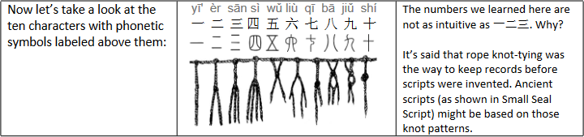
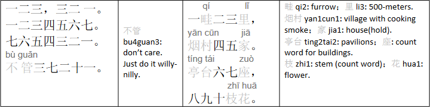

Lesson 2 (Di4 二 Ke4) More Number Words: All the Way to Ten
Let's continue with what we learned in Lesson One and learn how to write and pronounce numbers one through ten. Listed below are the strokes and phonetic symbols used.
We'll learn these out of order. Let's learn to write ten (or shi2) next: 十, which is 一heng1 一 shu4 (or vertical stroke) as pronounced in Mandarin Chinese.
[When writing a character with multiple strokes, it's important to write the strokes in the right order. Check out other rules in Appendix C. The rule here is: “First draw heng2 and then shu4.”]
Next comes the character for eight, 八, with two new kinds of stroke, pie3 and na4 (diagnose strokes to the left and right). [The rule applicable here is: “First draw pie3 and then na4.”]
Next, let's write the character for six, 六, which has a new kind of stroke, dian3, for the "dot" on the very top and at the bottom right. [The rule here is: “From top down.”]
Next comes five, 五, where an elbow stroke, heng2-zhe2, is used in the middle.
An extension to heng2-zhe2 is used in the character for nine, 九, which has 一 pie3 and heng2-zhe2- wan1-gou1. In this new term, wan1 means curve, and gou1 means hook.
The character for seven, 七, includes another type, wan1-gou1, and, as you can see, is shu4-wan1-gou1.
Finally, let’s introduce the character for four: 四, which includes 一shu4, heng2-zhe2(-gou1), (inside the half-open enclosure formed by the first two strokes) pie3, shu4-wan1, and 一 heng2 (“to close the box after it’s filled with its contents,” a rule applicable here).
 